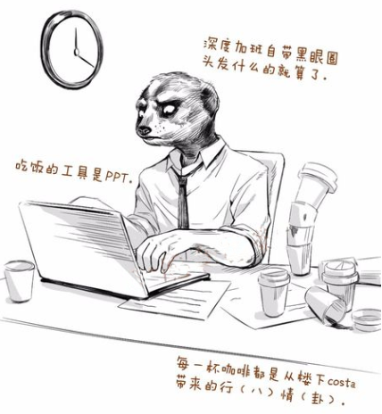

社畜工厂——草民的失败
本文最后更新于：1 年前
引言

今早看见一个关于日本男人表现社畜生活的宣传片，不禁想法一现，发现焦虑很可能来源于自我的懦弱和对无能为力之事的隐藏深处的恐惧。小时候看过不少的小说影视剧，深受金庸先生的江湖观念影响，善于恶，是与非。就像现在还会自己定义一些好的坏的，对的错的。一些观念成为行事准则之后就会发现自己想成为什么样的人，不想成为什么样的人。在我看来，社畜是典型的两面人的代表，因此我正逐渐走向社畜之路，渐渐离我想成为的人渐行渐远。
快餐社交的陷阱
时间上的自由往往直接让我们觉得我们在相同的时间内，能够做的事情比以前更多。因此就像我平时上课期间不求甚解一样，总觉得老师把我们圈在这里是一件浪费时间的事情。事实上，后来发现不只是我一个人有这样的想法。不知从哪个时刻开始，人与人的社交关系变成了浅尝辄止，一旦相处过程中遇到观点相冲突的地方往往就预示着交流的结束。前几年流行大批判“快餐式”阅读——只愿意看简短的内容，看到长篇大论的内容就头痛。在某些层面上，快餐式社交与阅读有相当的雷同之处。生活节奏的加快，在大多数情况下已经让深入细致的去了解成了一种特别稀缺的交互过程。
导致的结果就是，人与人之间的交往逐渐变得不再真实，人与人总是会对两人之间的距离错误估计。也不知道从什么时候开始，就被说：“如果你认真就输了”。然后各种社交软件上甚至见面交流，每个人都会下意识地放着真真假假虚虚实实的大炮，商业互夸，互吹互垒，若是某天我们再也不会说实话了，我们是不是在背离真实存在的感情？王力宏有一张专辑叫做《盖世英雄》，里面有一首歌叫做《在梅边》，里面讲到我们逐渐陷入了像《三体》里面描述的威慑纪元之后的情绪化社会，一切事情的结果都被简单地被情绪所左右，掉入了一个一切都简单化的快餐陷阱。
优势地位的霸权
最近人民日报几乎天天发表有关美国的各种事务，然后给我们一种对美国的刻板印象：“美国就是一个仗着自身强大，然后就可以在国际上胡作非为的典型代表。”我们把这种行径称为优势地位的霸权。这种优势地位的霸权不仅发生在国际社会上，在我们的日常生活中也随处可见。经常有一些时候聚在一起讨论一些事情，然后每个人都表达出了自己的看法，然后总是被某一个处于优势地位的人的一句话而否决或者下定义。优势地位需要获得非优势地位的支持，就会刻意表现接地气。因此这种霸权的常见伴生物是伪民主，就像美国一样，他们总统大选全民参与，然后美国7大政治家族的幕后老板都是华尔街的犹太财团。放在我们身边来看这种优势地位的霸权，优势地位者总是会根据自己的想法，去选择性地抽取民意，而这种民意不一定都能代表整体的利益。
我身边不管在哪个场合都能遇到优势地位的人，或者我自己在某些地方也属于优势地位。也就是说，在不知不觉当中，没有任何预兆和提醒，优势霸权就这样顺其自然地发生。当我发现的时候，我在向我所讨厌的人的方向越走越远，然后衍生出了对自己判断能力缺失的厌恶，和沉迷于温室环境的紧张与恐惧。我尝试在某些方面减少活动，以降低自己在这个方面的地位，以达到破除优势地位的目的，但结果自己怎么做都会被自己和别人所诟病，于是处在自我反思和嫌弃的怪圈之中难以跳出。
和平演变的沉沦
每个人应该都曾经在初入大学时，规划自己几年后的模样。当初从高中出来的青涩少年，在社会主义核心价值观培养出来的不成熟的思想之下，总是把自己想象成自己是个正义的使者，就像煎饼侠一样。同时我把我不成熟的思想一直沿用至今，就是为了不想变成所见到的圆滑、嘴巴甜蜜蜜、世俗和社会的状态。长久以来接受的儒家文化熏陶让我下意识会去抵制说谎，然后嫌弃变得越来越虚伪的自己。但现实是长期处在这样的一种环境之下，以前的再不适应，也会变的慢慢适应。如果当某个时刻的我发现我与这样的人能够融洽相处，还能相互调侃之后，我应该已经渐渐变成了这样的人。
和平演变不是最令人痛苦的事情，一直保持初心虽然会造成离群，但内心不会嫌弃自己。当和平演变之后，又突然发现了自己离自己想成为的人越来越远之后，最是让人痛苦。一边你在大群体中表现得若即若离，一边你在怀疑自己的内疚中内心翻江倒海。
以前我总觉得所有的事情都是想做并认真做都是能够做到的事情。现在看来，学校就是一台巨大的社畜工厂，源源不断地为社会改造刚从中学出来的青涩小伙。最可怕的事情是这种改造没有预兆和表现，就这样顺其自然的发生。这似乎是一个永远也无法跳出的怪圈，紧紧地束缚着想要逃离和远走高飞的人们。“没有一点点防备，也没有一丝丝顾虑，就这样出现”。当自己眼睁睁看着自己变成自己当初所讨厌的模样，却无能为力做任何改变，我想人世间最大的痛苦也莫过于此。
本博客所有文章除特别声明外，均采用 CC BY-SA 4.0 协议 ，转载请注明出处！